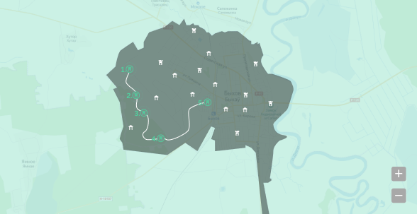

Исторические маршруты

Название исторического маршрута 1
8 км
1.5 ч
5 объектов
С севера внутренний двор замыкался каменной стеной
с выходом на городской вал. Западая сторона замкового
комплекса, обращённая к торговой площади, была застроена
корпусами казарм, имела посередине въездные ворота с
подъёмным мостом и фланкировалась по углам восьмигранными
оборонительными башнями. Маршрут созан на основе самых
интересных объектов города и района.
Название исторического маршрута 2
8 км
1.5 ч
5 объектов
С севера внутренний двор замыкался каменной стеной
с выходом на городской вал. Западая сторона замкового
комплекса, обращённая к торговой площади, была застроена
корпусами казарм, имела посередине въездные ворота с
подъёмным мостом и фланкировалась по углам восьмигранными
оборонительными башнями. Маршрут созан на основе самых
интересных объектов города и района.
1
2
3
4
5